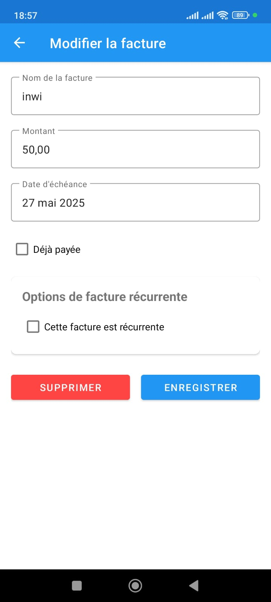
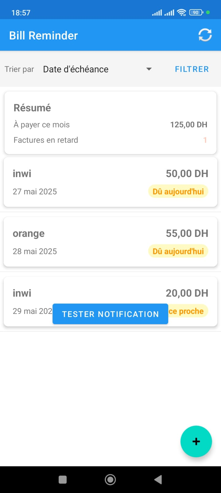
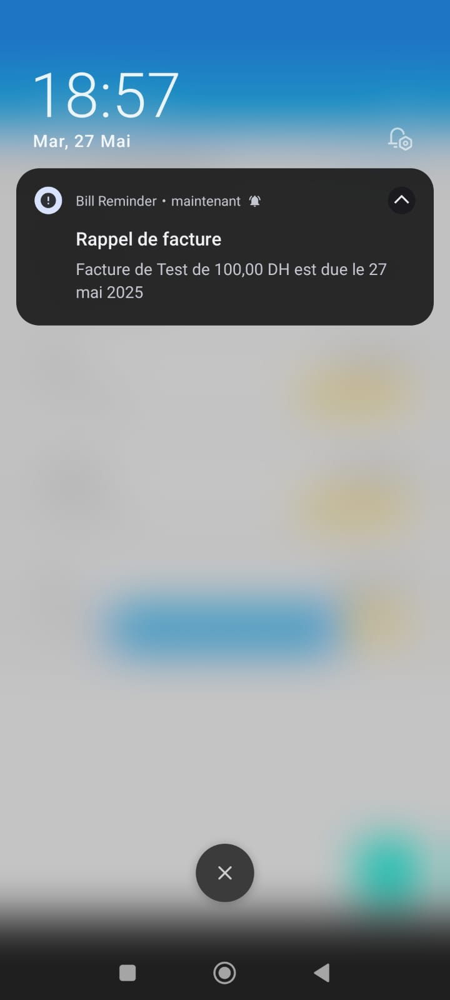

Université IBN tofail kénitra
Rapport Technique
Application Mobile de Rappel des Factures
Réalisé par : MOUAD CHAKIR
Classe :DAWM
Année Académique : 2024-2025
Mai 2025
Introduction
Ce rapport présente le développement d'une application mobile Android appelée "RappeldesFactures", conçue pour aider les utilisateurs à gérer leurs factures et à recevoir des rappels avant les échéances de paiement.
Dans un contexte où la gestion des factures devient de plus en plus complexe avec la multiplication des services et abonnements, cette application répond à un besoin concret : éviter les retards de paiement et les pénalités associées grâce à un système de rappel fiable et personnalisable.
L'application permet aux utilisateurs d'enregistrer leurs factures avec toutes les informations pertinentes (nom, montant, date d'échéance), de les organiser selon différents critères, et surtout, de recevoir des notifications la veille des échéances à une heure spécifique (17:45).
1. Description technique de l'architecture et des composants utilisés
Architecture globale
L'application RappeldesFactures est développée sous Android en utilisant le langage Java. Elle suit une architecture classique MVC (Modèle-Vue-Contrôleur) avec une séparation claire entre les données, l'interface utilisateur et la logique métier. Cette approche permet une maintenance facilitée et une évolution progressive de l'application.
L'architecture est organisée comme suit :
- Modèle : Classes de données (Bill), helper de base de données (BillDatabaseHelper)
- Vue : Fichiers XML de mise en page, adaptateurs personnalisés
- Contrôleur : Activités et services qui orchestrent les interactions
Composants principaux
-
Base de données SQLite
- Implémentée via la classe
BillDatabaseHelper qui étend SQLiteOpenHelper
- Structure de la table des factures :
CREATE TABLE bills (
_id INTEGER PRIMARY KEY AUTOINCREMENT,
name TEXT NOT NULL,
amount REAL NOT NULL,
due_date TEXT NOT NULL,
is_paid INTEGER DEFAULT 0,
notes TEXT,
created_at TEXT,
updated_at TEXT
)
- Méthodes principales implémentées :
addBill() : Ajoute une nouvelle factureupdateBill() : Met à jour une facture existantedeleteBill() : Supprime une facture par son IDgetAllBills() : Récupère toutes les facturesgetBill() : Récupère une facture spécifique par IDgetUpcomingBills(int days) : Récupère les factures à venir dans les X prochains jours
-
Interface utilisateur
- MainActivity : Écran principal avec liste des factures, statistiques et options de filtre/tri
- AddEditBillActivity : Écran d'ajout et modification des factures
- Layouts XML principaux :
activity_main.xml : Layout principal avec toolbar, statistiques et listeactivity_add_edit_bill.xml : Formulaire d'ajout/modificationbill_item.xml : Template pour chaque élément de la liste des factures
- Ressources graphiques personnalisées :
app_logo.xml : Logo vectoriel de l'applicationbill_reminder_foreground.xml : Icône vectorielle pour les notificationsstatus_background.xml : Arrière-plans colorés pour les différents statuts
- Adaptateur personnalisé :
BillAdapter pour l'affichage dynamique des factures avec code couleur selon leur statut
-
Système de notifications
- Double approche pour garantir la fiabilité :
NotificationHelper : Programmation des notifications via AlarmManager
Méthode scheduleBillReminder() configurée pour notifier la veille de l'échéance à 17:45
BillNotificationService : Service en arrière-plan vérifiant périodiquement les factures à échéance
Vérifie toutes les 5 minutes si des factures sont dues le lendemain et s'il est l'heure d'envoyer des notifications (autour de 17:45)
NotificationReceiver : Gère la réception des intents de notification et construit les notifications Android- Gestion des permissions selon les versions d'Android :
- Android 13+ (API 33+) : Demande explicite de
POST_NOTIFICATIONS
- Android 12+ (API 31+) : Gestion de
SCHEDULE_EXACT_ALARM
- Dialogue utilisateur pour guider vers les paramètres système si nécessaire
- Bouton de test de notification ajouté dans l'interface principale pour vérifier le fonctionnement
Extrait du code de gestion des notifications
// Programmation d'une notification à une heure précise
notificationTime.set(Calendar.HOUR_OF_DAY, 17);
notificationTime.set(Calendar.MINUTE, 45);
notificationTime.set(Calendar.SECOND, 16);
// Utilisation d'une méthode adaptée selon la version d'Android
if (Build.VERSION.SDK_INT >= Build.VERSION_CODES.S) { // Android 12+
if (alarmManager.canScheduleExactAlarms()) {
alarmManager.setExactAndAllowWhileIdle(AlarmManager.RTC_WAKEUP,
notificationTime.getTimeInMillis(), pendingIntent);
} else {
alarmManager.set(AlarmManager.RTC_WAKEUP,
notificationTime.getTimeInMillis(), pendingIntent);
}
}
-
Gestion des états et persistance
- Sauvegarde de l'état lors des changements de configuration (rotation d'écran) :
- Utilisation de
onSaveInstanceState() et onRestoreInstanceState()
- Conservation des filtres et tris actifs
- Persistance des préférences :
- Dernier mode de tri utilisé
- Filtres appliqués précédemment
- Détection et réaction aux changements système :
- Récepteur pour
BOOT_COMPLETED pour reprogrammer les notifications après redémarrage
Structure du projet
L'organisation du code suit les conventions Android :
- java/com.example.rappeldesfactures :
- Classes Java principales : Activités, services, adaptateurs, helpers
- Modèle de données (Bill.java)
- Gestionnaires spécialisés (NotificationHelper.java, BillDatabaseHelper.java)
- res/layout : Fichiers XML définissant l'interface utilisateur
- res/drawable : Ressources graphiques et icônes
- res/values : Chaînes de caractères, couleurs, styles et dimensions
- res/menu : Définitions des menus
- AndroidManifest.xml : Configuration de l'application, déclaration des activités et permissions
2. Présentation des fonctionnalités implémentées
Gestion complète des factures
Création et modification des factures
- Formulaire complet :
- Nom de la facture (ex: "Facture d'électricité", "Loyer")
- Montant avec gestion des décimales (formaté en DH)
- Date d'échéance avec sélecteur de date intuitif
- Notes optionnelles pour ajouter des informations complémentaires
- Case à cocher pour marquer une facture comme payée
- Validation des données :
- Contrôles de validité pour s'assurer que les champs obligatoires sont remplis
- Validation du format du montant
- Gestion des erreurs avec messages explicites
- Stockage sécurisé :
- Sauvegarde immédiate dans la base de données SQLite
- Transactions pour garantir l'intégrité des données
- Horodatage de la création et de la dernière modification
- Suppression de factures :
- Suppression sécurisée avec dialogue de confirmation
- Annulation des notifications associées lors de la suppression

Figure 2: Formulaire d'ajout et de modification des factures
Exemple d'implémentation de la méthode de mise à jour d'une facture :
public int updateBill(Bill bill) {
SQLiteDatabase db = this.getWritableDatabase();
ContentValues values = new ContentValues();
values.put(COLUMN_NAME, bill.getName());
values.put(COLUMN_AMOUNT, bill.getAmount());
values.put(COLUMN_DUE_DATE, bill.getDueDate());
values.put(COLUMN_IS_PAID, bill.isPaid() ? 1 : 0);
values.put(COLUMN_NOTES, bill.getNotes());
values.put(COLUMN_UPDATED_AT, new SimpleDateFormat("yyyy-MM-dd HH:mm:ss",
Locale.getDefault()).format(new Date()));
return db.update(TABLE_BILLS, values, COLUMN_ID + " = ?",
new String[]{String.valueOf(bill.getId())});
}
Visualisation et organisation avancée des factures
Interface de liste principale
- Affichage informatif de chaque facture :
- Nom de la facture en titre principal
- Montant formaté avec le symbole de devise (DH)
- Date d'échéance avec formatage lisible (ex: "15 Mai 2025")
- Étiquette de statut visuelle avec code couleur :
- Rouge pour les factures en retard
- Orange pour les factures dues aujourd'hui
- Bleu pour les factures à venir
- Vert pour les factures payées
- Fonctionnalités de tri avancées via le menu déroulant en haut de l'écran :
- Date d'échéance : Ordonne les factures de la plus proche échéance à la plus éloignée
- Montant : Classe les factures du montant le plus élevé au plus faible
- Nom : Trie alphabétiquement les factures par leur nom
- Statut : Organise les factures par priorité (en retard, dues aujourd'hui, à venir, payées)
- Système de filtrage multi-critères accessible via le bouton de filtre :
- Dialogue modal permettant de sélectionner plusieurs filtres simultanément
- Filtres disponibles :
- Toutes les factures : Affiche l'ensemble des factures
- Factures non payées : Montre uniquement les factures en attente de paiement
- Factures en retard : Filtre les factures dont la date d'échéance est dépassée
- Factures du mois en cours : Affiche les factures dues dans le mois actuel

Figure 3: Interface de tri et filtrage des factures
Tableau de bord et statistiques
- Panneau de statistiques en haut de l'écran principal :
- Montant total des factures du mois : Calculé en temps réel
- Nombre de factures en retard : Indicateur visuel avec compteur
- Mise à jour automatique des statistiques lors de :
- L'ajout d'une nouvelle facture
- La modification d'une facture existante
- Le marquage d'une facture comme payée
- La suppression d'une facture
Extrait du code de calcul des statistiques :
private void updateSummaryData() {
double thisMonthTotal = 0;
int overdueCount = 0;
Calendar cal = Calendar.getInstance();
int currentMonth = cal.get(Calendar.MONTH);
int currentYear = cal.get(Calendar.YEAR);
Date today = cal.getTime();
for (Bill bill : billList) {
if (bill.isPaid()) continue;
try {
Date dueDate = dateFormat.parse(bill.getDueDate());
if (dueDate != null && dueDate.before(today)) {
overdueCount++;
}
Calendar dueCal = Calendar.getInstance();
dueCal.setTime(dueDate != null ? dueDate : new Date());
int billMonth = dueCal.get(Calendar.MONTH);
int billYear = dueCal.get(Calendar.YEAR);
if (billMonth == currentMonth && billYear == currentYear) {
thisMonthTotal += bill.getAmount();
}
} catch (ParseException e) {
e.printStackTrace();
}
}
// Update the UI
thisMonthAmountView.setText(String.format(Locale.getDefault(),
getString(R.string.amount_format), thisMonthTotal));
overdueCountView.setText(String.valueOf(overdueCount));
}
Système de rappels sophistiqué
Architecture double pour une fiabilité maximale

Figure 4: Exemple de notification de rappel de facture
Gestion avancée des permissions
- Demande contextuelle de permissions :
- Vérification automatique au démarrage de l'application
- Dialog explicatif détaillant pourquoi les permissions sont nécessaires
- Redirection vers les paramètres système pour les permissions spéciales
- Adaptation aux différentes versions d'Android :
- Android 13+ (API 33+) : Gestion de POST_NOTIFICATIONS
- Android 12+ (API 31+) : Gestion de SCHEDULE_EXACT_ALARM
- Compatibilité descendante pour les versions antérieures
Interface utilisateur moderne et intuitive
Design et ergonomie
- Logo et identité visuelle :
- Création d'un logo vectoriel spécifique à l'application
- Icône représentant une facture avec un rappel (horloge)
- Palette de couleurs professionnelle et cohérente
- Composants Material Design :
- Utilisation du Floating Action Button (FAB) pour l'ajout rapide de factures
- Cards pour représenter chaque facture avec une hiérarchie visuelle claire
- Spinners et dialogues respectant les guidelines Material Design
- Navigation fluide et intuitive :
- Transitions animées entre les écrans
- Retour logique entre les activités (hierarchical navigation)
- Menu d'options accessible via la barre supérieure
- Interface responsive :
- Adaptation automatique aux différentes tailles d'écrans
- Gestion correcte des rotations d'écran avec sauvegarde d'état
- Utilisation d'unités de mesure relatives pour garantir une mise à l'échelle correcte
3. Analyse critique de l'approche suivie
Choix techniques et justifications
- Java vs Kotlin :
- L'application est développée en Java, un choix pragmatique et adapté au contexte du projet
- Avantages : Maturité du langage, large base de documentation, stabilité des APIs
- Inconvénients : Code plus verbeux, absence de fonctionnalités modernes comme le null-safety
- Justification : La familiarité avec Java a permis un développement plus rapide et efficace, évitant la courbe d'apprentissage de Kotlin
- SQLite natif vs Room :
- Utilisation directe de l'API SQLite plutôt que la bibliothèque Room de Jetpack
- Avantages : Contrôle précis des requêtes SQL, absence de dépendances supplémentaires
- Inconvénients : Code plus verbeux, pas de vérification à la compilation, risques d'erreurs SQL
- Justification : Le modèle de données relativement simple ne nécessitait pas l'infrastructure complète de Room
- Double approche pour les notifications :
- Implémentation de deux mécanismes complémentaires (AlarmManager + Service)
- Avantages : Redondance assurant une meilleure fiabilité des notifications, contournement des restrictions d'Android
- Inconvénients : Complexité accrue du code, consommation de ressources potentiellement plus élevée
- Justification : Les tests ont démontré que cette approche était nécessaire pour garantir la fiabilité des notifications sur diverses versions d'Android
- Interfaces XML traditionnelles vs Jetpack Compose :
- Construction des interfaces utilisateur avec des layouts XML classiques
- Avantages : Cohérence avec le reste du code, outils de prévisualisation stables
- Inconvénients : Moins de flexibilité pour les interfaces dynamiques, code plus verbeux
- Justification : L'utilisation des layouts XML traditionnels a permis d'avancer rapidement sans introduire de nouvelles technologies
Défis rencontrés et solutions apportées
- Restrictions d'Android sur les alarmes exactes :
- Problème : Android 12+ impose des restrictions sévères sur l'utilisation des alarmes exactes (setExact, setExactAndAllowWhileIdle)
- Impact : Les notifications n'apparaissaient pas à l'heure exacte configurée (17:45)
- Solution :
- Implémentation de la permission SCHEDULE_EXACT_ALARM dans le manifeste
- Dialogue guidant l'utilisateur pour activer cette permission dans les paramètres système
- Service de vérification périodique comme mécanisme de secours
- Résultat : Fiabilité significativement améliorée des notifications sur les appareils Android récents
- Gestion des permissions pour les notifications :
- Problème : Android 13+ exige une permission explicite (POST_NOTIFICATIONS) pour afficher des notifications
- Impact : Les notifications n'apparaissaient pas sur les appareils Android 13+ sans autorisation explicite
- Solution :
- Détection de la version d'Android à l'exécution
- Implémentation d'une demande de permission à l'utilisateur
- Gestion du résultat via onRequestPermissionsResult
- Résultat : Expérience utilisateur améliorée avec une explication claire de la nécessité des notifications
- Débogage des notifications :
- Problème : Difficulté à identifier pourquoi certaines notifications n'apparaissaient pas
- Impact : Expérience utilisateur dégradée, fonctionnalité principale compromise
- Solution :
- Ajout d'un bouton de test de notification dans l'interface principale
- Messages Toast de débogage indiquant quand une notification est programmée
- Logs détaillés pour suivre le cycle de vie des notifications
- Résultat : Identification plus rapide des problèmes et solution efficace
- Optimisation des performances :
- Problème : Risque de ralentissements lors du chargement des listes de factures volumineuses
- Solution :
- Utilisation de ViewHolder pattern dans l'adaptateur
- Chargement asynchrone des données de la base
- Optimisation des requêtes SQL avec indexation appropriée
Pistes d'amélioration et évolutions futures
- Modernisation technique :
- Migration vers Kotlin : Réécriture progressive en Kotlin pour bénéficier de la concision et des fonctionnalités modernes du langage
- Adoption de Jetpack Compose : Pour des interfaces plus dynamiques et un code plus déclaratif
- Implémentation de Room : Pour une gestion plus robuste de la base de données avec typage fort et vérification à la compilation
- Architecture MVVM : Refactorisation vers Model-View-ViewModel pour une meilleure séparation des préoccupations
- Fonctionnalités additionnelles :
- Catégorisation des factures : Ajout de catégories (loyer, électricité, téléphone, etc.) pour une meilleure organisation
- Factures récurrentes : Gestion automatisée des factures périodiques (mensuelles, trimestrielles, annuelles)
- Scan de factures : Utilisation de la caméra pour scanner et extraire automatiquement les informations des factures papier
- Améliorations UX/UI :
- Mode sombre : Implémentation d'un thème sombre pour réduire la fatigue oculaire
- Widgets d'accueil : Création de widgets pour l'écran d'accueil affichant les prochaines échéances
- Animations améliorées : Transitions et animations plus fluides pour une expérience utilisateur premium
- Personnalisation accrue : Permettre à l'utilisateur de personnaliser les couleurs, l'heure des notifications, etc.
- Fonctionnalités avancées :
- Statistiques et analyses : Graphiques et visualisations des dépenses par catégorie, mois, année
- Intégration bancaire : Connexion sécurisée avec les API bancaires pour vérifier automatiquement les paiements
- Paiements intégrés : Permettre le paiement direct des factures via l'application
- Rappels intelligents : Utilisation de l'IA pour suggérer des moments optimaux pour les rappels basés sur les habitudes de l'utilisateur
- Optimisations techniques :
- Amélioration de l'utilisation de la batterie : Optimisation du service de notifications pour réduire l'impact sur la batterie
- Tests automatisés : Mise en place de tests unitaires et d'intégration pour assurer la stabilité
- Support multi-plateforme : Exploration de solutions comme Flutter ou React Native pour une version iOS
Conclusion
L'application RappeldesFactures répond efficacement au besoin de rappel et de gestion des factures avec une interface intuitive et des fonctionnalités bien pensées. Malgré les défis techniques posés par les restrictions des systèmes Android récents, l'application a su s'adapter grâce à une approche pragmatique et innovante, notamment avec le système de double vérification pour les notifications.
Les choix technologiques, bien que classiques, offrent une grande stabilité et compatibilité avec toutes les versions récentes d'Android. La priorité donnée à l'expérience utilisateur a permis de développer une solution qui répond parfaitement aux besoins des utilisateurs tout en respectant les contraintes techniques des appareils mobiles.
L'application est fin prête à être utilisée par le grand public et offre de nombreuses possibilités d'évolution pour enrichir encore davantage l'expérience utilisateur et les fonctionnalités offertes.